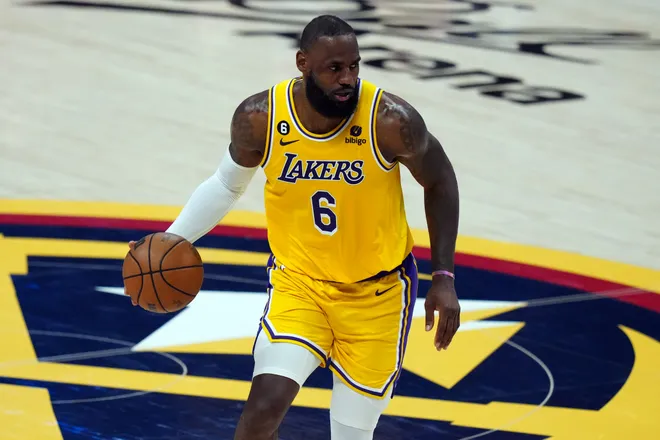

Wardell Stephen Curry II ( born March 14, 1988)[1] is an American professional basketball player for the Golden State Warriors of the National Basketball Association (NBA). Widely regarded as one of the greatest basketball players of all time and the greatest shooter in NBA history,[2] Curry is credited with revolutionizing the sport by inspiring teams and players to take more three-point shots.[3][4][5] A nine-time NBA All-Star and nine-time All-NBA selection, including four times on the first team, he has been named the NBA Most Valuable Player (MVP) twice, won four NBA championships, and received an NBA Finals MVP Award and an NBA All-Star Game MVP Award.
LeBron Raymone James Sr. ( born December 30, 1984) is an American professional basketball player for the Los Angeles Lakers in the National Basketball Association (NBA). Nicknamed "King James", he is considered to be one of the greatest basketball players in history and is often compared to Michael Jordan in debates over the greatest basketball player of all time.[a] James is the all-time leading scorer in NBA history and ranks fourth in career assists. He has won four NBA championships (two with the Miami Heat, one each with the Lakers and Cleveland Cavaliers), and has competed in 10 NBA Finals.
